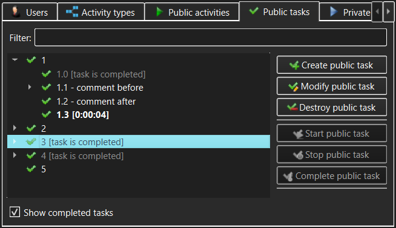

Public Tasks view
The Public Tasks view allows management of Public Tasks (subject to access
permissions granted after login). These are Tasks available to any user who
can login to a TimeTracker3 workspace.

The controls in the Public Tasks view allow the user to access:
- Public tasks tree - this displays the tree of
available Public Tasks. Normally all Public Tasks will be visible
to all users; however, if the corresponding User is configured to only be
allowed to work on specific Public Tasks, then such user will only be
able to see these configured Public Tasks but not the other existing
Public Tasks.
- Filter - type anything here to narrow the set of
displayed Public Tasks or to quickly find a specific Public Task. The
filter match can appear anywhere within the Public Task name. If some
sub-task of a Public Task matches the filter but its parent Public Task does
not, the parent Public Task will still be displayed, but will be grayed out.
- Show completed tasks - if un-checked, Public Tasks
marked as "completed" will not appear in the Public Tasks tree. An exception
to this rule is a "completed" Public Task that has an "un-completed"
sub-task - such a "completed" parent will appear in the Public Tasks tree
but will be grayed out and visually marked as "completed".
- Create public task - use this button to create a new
Public Task.
This will only be permitted to someone with Administrator or Manage Public
Tasks
capability and will be disallowed in a read-only workspace.
- View/Modify public task - use this button to view or modify
the Public Task currently selected in the Public Tasks tree. The meaning of this
button (view or modify) will be determined by whether the current user has
logged in with Administrator or Manage Public Tasks capability and whether or not
the workspace is read-only.
- Destroy public task - use this button to permanently destroy
the Public Task currently selected in the Public Tasks tree. You will be asked to
confirm the destruction, as this is a dangerous operation in that it also
destroys all its sub-tasks and all Work items and Events logged against that Public
Task and its sub-tasks. The destroy confirmation
dialog that pops up will show just how much the recorded work history will be
impacted.
- Start public task - use this button to start
recording the currently selected Public Task. If any Activity or Task
was already being recorded, its recording is automatically stopped and the
corresponding Work item is logged into the workspace.
- Stop public task - use this button to stop
recording the Public Task that is currently being recorded. This button
will only be available when such a Public Task is selected in the Public
Tasks tree.
- Complete public task - use this button to mark the
selected Public Task as "completed". The Public Task may be configured to
require the user to enter a comment when it is being completed; if this is
so, then the comment entry dialog will pop up. NOTE that a "completed"
Public Task may be "un-completed" in order to resume working on it, but this
will require Administrator capability (i.e. the Manage Public Tasks
capability will not be sufficient). This ensures that the proper Public Task
workflow is observed but also allows taking care of e.g. erroneous or
accidental completion.
While a Public Task is being recorded, the corresponding item in the
Public Tasks tree will be highlighted and its recorded duration will be
displayed alongside the item and updated live.
Note that only one activity can be recorded at any given time. Therefore, if
e.g. a Public Activity or a Private Task is being recorded, starting a Public
Task will stop and log the previously active recording, logging the
corresponding Work item.
As well as action buttons, the Public Tasks tree allows invoking the same
actions (create, modify, destroy, start, stop or complete Public Tasks) via the context menus that pop
up when the Public Tasks tree items are right-clicked.
See also:
Create/Modify Public Task dialog,
Destroy
Public Task dialog